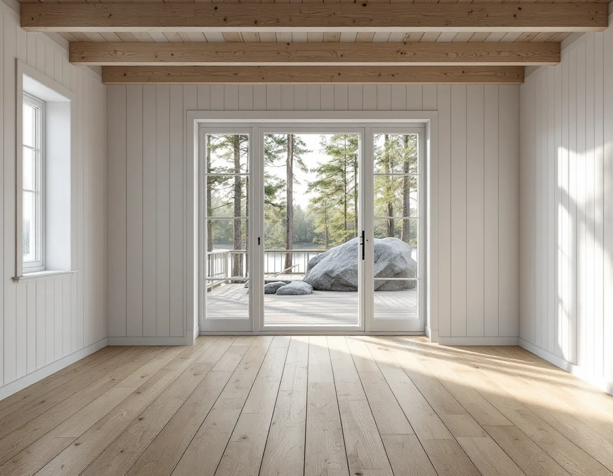
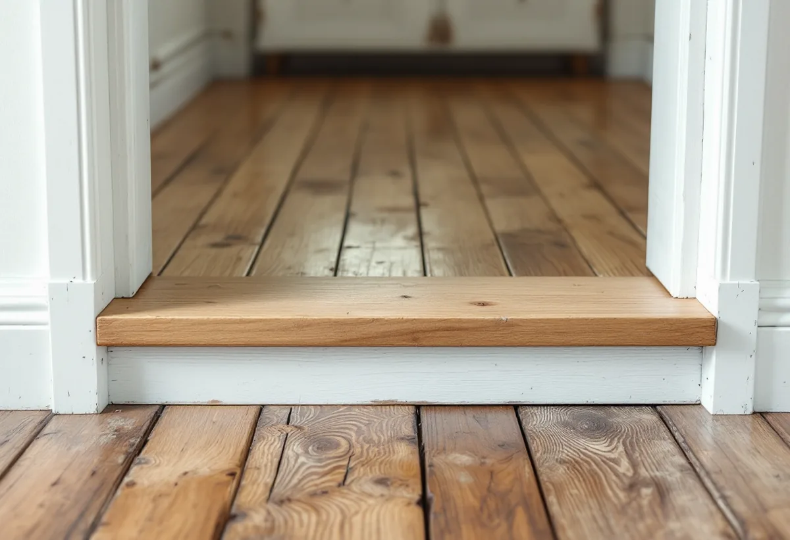

Besök
Vi mäter höjder i alla delar av huset, känner efter svikt och tittar ner i krypgrunden om det går.
Många hus i Tyresö började som fritidshus och har blivit villor genom tillbyggnader i flera omgångar. Golven berättar ofta den historien, med olika höjder, underlag och material från rum till rum. Geal Entreprenad AB lägger nya golv, slipar gamla och rättar till underlaget i hela Tyresö, med gratis platsbesök och skriftligt kostnadsförslag.

Tyresö kommuns planbeskrivning för Fasanvägen etapp 13 berättar att Brevikshalvön tillhörde Tyresögodset från medeltiden fram till 1930. Under 1930–1950-talen styckades stora arealer av för fritidshus, och sedan 1990-talet har antalet åretruntboende ökat. Kommunen har beslutat att bejaka omvandlingen från fritidshusområde till område för permanentboende.
I planområdet finns 119 bostadsfastigheter. Planbeskrivningen konstaterar att husen genom tillbyggnader och ombyggnationer har anpassats efter dagens standard och enskilda behov, och att bebyggelsen varierar från enklare fritidshus till moderna medelstora och större villor. Den ursprungliga karaktären av sommarstugeområde är särskilt väl bevarad i den södra delen.

När en stuga från 1940-talet har fått en tillbyggnad från 1990-talet ligger de två delarna sällan på samma höjd eller på samma slags underlag. Ofta är det just i övergången som golvet knarrar, spricker eller har en tröskel som ingen tycker om. Ska golvet bli sammanhängande behöver underlaget i den lägre delen byggas upp och skarven mellan de två bjälklagen överbryggas.
Ibland är det bättre att låta delarna få var sitt golv och en tydlig gräns, till exempel vid en dörröppning. Vi mäter höjder och svikt i båda delarna och visar dig vad respektive lösning innebär, så att beslutet bygger på hur huset faktiskt ser ut. Dörrarnas frigång, trappor och anslutningen mot altandörren avgör ofta vilken höjd golvet kan få, och därför mäter vi dem innan materialet väljs.
Står huset på krypgrund vilar golvbjälklaget på låga murar med ett luftutrymme mot marken. Boverket skriver att framför allt den uteluftsventilerade krypgrunden med träbjälklag ofta drabbas av fuktskador. På våren och sommaren kyls varm, fuktig uteluft ned i den kallare grunden, och fukten kan ge skador på bjälklagets undersida. Luft rör sig dessutom ofta mellan grunden och bostaden.
Innan vi lägger ett nytt golv på ett sådant bjälklag vill vi veta hur det mår underifrån. Finns det lukt, missfärgningar eller lös isolering är det grunden som behöver åtgärdas först. Ett nytt golv ovanpå ett fuktigt bjälklag döljer bara problemet.
Planbeskrivningen bedömer att marken i Fasanvägens planområde är av normalrisktyp när det gäller markradon, och att nya bostäder ska byggas radonskyddade. Boverket rekommenderar att den som bygger om eller till sitt hus mäter radon, under eldningssäsongen oktober till april och under minst två, helst tre månader.
Vid ett golvbyte i ett befintligt hus är det framför allt golv som ligger direkt mot marken och genomföringar för rör som påverkar hur luft från marken tar sig in. Har huset inte mätts på länge kan det vara klokt att mäta innan ett större golvarbete och sedan igen när det är klart.
Planbeskrivningen lyfter fram naturtomterna, där husen ligger direkt i skogen utan anlagda gräsmattor. Det är fint att bo så, men barr, grus och sand följer med in på skorna. I hall och vid altandörren håller ett tåligt golv bättre, till exempel klinker eller ett trägolv med en hård lack, medan sovrum och vardagsrum kan få en mjukare oljad yta.
Vi föreslår gärna en tydlig zon innanför entrén där golvet tål mer, och en övergång som ligger där den inte syns. Mer om material och ytbehandlingar finns på sidan om golvläggning.
Vi mäter höjder i alla delar av huset, känner efter svikt och tittar ner i krypgrunden om det går.
Du får ett skriftligt kostnadsförslag där underlag, golv och eventuella åtgärder på grunden står var för sig.
Vi bestämmer ordningen mellan rummen och om radon- eller fuktmätning behövs först.
Gamla golv tas bort, bjälklag riktas och nivåskillnader byggs upp.
Nytt golv läggs eller gamla brädor slipas, med lister och trösklar anpassade efter dörrarna.
Vi går igenom golvet och lämnar råd om skötsel.
Skatteverket räknar golvläggning och golvslipning som rotarbete, i villa och i fritidshus som du äger och använder. Avdraget är 30 procent av arbetskostnaden, högst 50 000 kr per person och år och högst 75 000 kr tillsammans med rutavdrag.
Material och resor ingår inte. Vi drar avdraget direkt på fakturan.
Nivåskillnader mellan husets delar, bjälklagets skick och hur många gamla lager som ska bort påverkar mest. Behöver grunden åtgärdas innan golvet läggs blir det ett eget moment. Platsbesöket är gratis och du får ett skriftligt kostnadsförslag.
Parkett, trägolv, klinker och slipning.
Golvläggning i Stockholm →Takbyte, takbesiktning och plåtarbeten.
Takläggare i Tyresö →Solberga, Raksta och Brevik.
Takrenovering i Tyresö →LTA-avlopp, källarbadrum och golvbrunn.
Badrumsrenovering i Tyresö →Startbesked, utstakning och slutbesked.
Byggföretag i Tyresö →Timmerhus, fritidshus och villor i Tyresö.
Fasadrenovering i Tyresö →Gamla bågar och beslag i Tyresö.
Fönsterbyte i Tyresö →Stugor som blir helårshus.
Köksrenovering i Tyresö →Rödfärgade hus, stugor och interiörer i Tyresö.
Målare i Tyresö →Stuprör, rännor och beslag i Tyresö.
Plåtslagare i Tyresö →Stugor, altaner och tillbyggnader.
Snickare i Tyresö →Byggrätten i omvandlingsområdena.
Tillbyggnad i Tyresö →